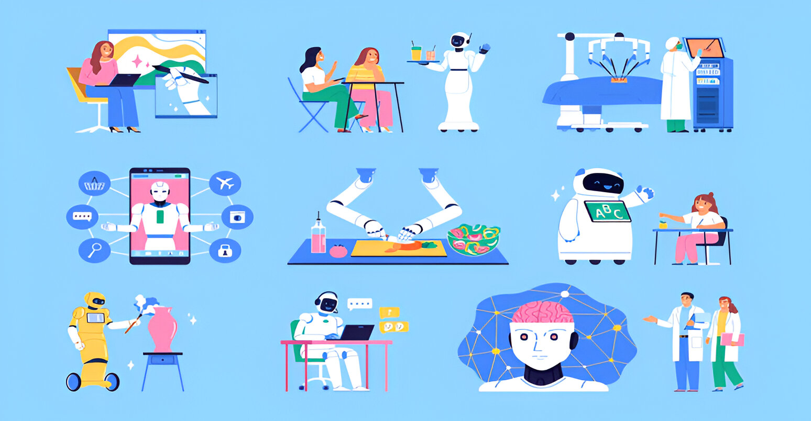

¿Qué es la Robotica?
La robótica es una rama de la ingeniería y la informática que abarca la concepción, el diseño, la fabricación y el funcionamiento de robots . El objetivo de la robótica es crear máquinas inteligentes que puedan asistir a los humanos de diversas maneras.
La robótica puede adoptar diversas formas. Un robot puede parecerse a un humano o consistir en una aplicación robótica, como la automatización robótica de procesos , que simula la forma en que los humanos interactúan con el software para realizar tareas repetitivas basadas en reglas.
¿Qué ventajas ofrece la Robotica?
- Mayor precisión.
- Ayudar emocionalmente a las personas.
- Realizar tareas peligrosas.
- Realidad ampliada.
- Mayor velocidad.
- Reducción de costos.
- Ir a donde el humano no puede.
- Hacer tareas que para el ser humano serían mortales.
Características de la Robotica
La robótica es la ciencia que estudia a los robots, y como tal, concentra las distintas disciplinas necesarias para diseñar y fabricarlos. Así, reúne conocimientos de distintas ramas de la ingeniería, de la electrónica, de la física, la informática, la mecánica, la animatrónica y otras áreas del saber semejantes.
Su cometido, claramente, es desarrollar los diferentes aspectos de un robot funcional: su autonomía e inteligencia propia, su resistencia y capacidad de operatividad, su programación y mecanismos de control.
Además, se trata de una disciplina relativamente joven, cuyas aplicaciones en la vida real tienen un enorme impacto. Al mismo tiempo es fuente de desconfianza y de temores de parte de la sociedad.
¿Cuáles son los usos más destacados de la robótica?
Entre las aplicaciones de la robótica por sectores profesionales se pueden mencionar:
- Transporte de materiales.
- Montaje.
- Corte mecánico, rectificado, desbardado y pulido.
- Pintura.
- Manipulación de plásticos y otros materiales.
- Tareas peligrosas como soldaduras, implementación de sustancias inhalantes nocivas, transporte de materiales pesados.
- Medicina.
- Reciclaje.
